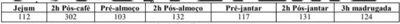
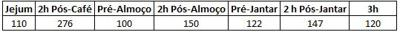
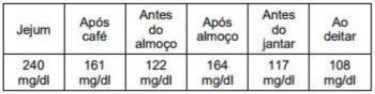
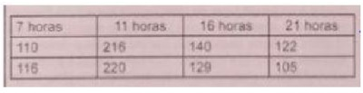
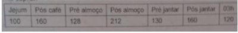

Questão 1 · Critérios diagnósticos · Tratamento medicamentoso · 4000124098Insulinoterapia no tratamento do diabetes mellitus tipo 2 Homem, 68 anos, procura atendimento com queixa de poliúria, polidipsia, perda de peso e turvação visual. Dados relevantes do exame físico: IMC = 28,3Kg/m² ; PA = 144x92mmHg. Apresenta os seguintes exames laboratoriais recentes: glicemia de jejum = 386mg/dL; hemoglobina glicada = 13,2%; ureia = 42mg/dL; creatinina = 1,0mg/dL. Sobre esse caso, assinale a alternativa correta.
A O diagnóstico de diabetes mellitus depende de confirmação com um novo exame laboratorial.
B Os dados são suficientes para concluir pelo diagnóstico de diabetes mellitus e está indicado o uso de insulina e metformina para o tratamento inicial.
C O paciente tem diabetes mellitus, devendo receber orientações para mudança de estilo de vida, e seu tratamento deve ser iniciado com metformina.
D O paciente deve ser internado para hidratação e tratamento com insulina venosa.
E O paciente tem diabetes mellitus, e seu tratamento inicial deve envolver mudança de estilo de vida, metformina e sulfonilureia.
Questão 2 · Farmacocinética das insulinas · 4000113941A extensa rede de capilares possibilita a absorção gradativa da insulina e garante o per l farmacocinético descrito pelo fabricante. Podemos indicar como errado o item:
A A via usual para aplicação de insulina é a subcutânea (SC).
B A via intramuscular (IM), às vezes, é usada em pronto-socorro, para atender urgência de hiperglicemia, e o serviço não tem disponível análogo de insulina de ação rápida.
C A via endovenosa (EV) é considerada em unidade de terapia intensiva (UTI), na qual o paciente permanece devidamente monitorado, com acompanhamento médico e de enfermagem.
D A insulina de ação lenta é a única alternativa para aplicações por via IM e por via endovenosa (EV).
Questão 3 · Tratamento medicamentoso · Insulinoterapia no tratamento do diabetes mellitus tipo 2 · 4000034307Mulher de 55 anos comparece ao consultório de Clínica Médica para o exame periódico de saúde. Queixa-se de falta de energia, roncos, di culdade de memorização, poliúria e perda de 5kg em dois meses. Desconhece doenças prévias, nega tabagismo, etilismo ou uso de quaisquer medicamentos. Ao exame físico, apresenta PA 154/94mmHg, FC 76bpm, FR 17irpm, SpO₂ em ar ambiente 92%, peso 90kg, altura 1,50m. Está alerta e orientada, com mucosas coradas e hidratadas. Os exames respiratório e cardiovascular são normais. O abdome é globoso, normotenso e indolor. Exames de laboratório: GJ 323 mg/dL; HbA1C 10,7%; ALT 80U/L; AST 55U/L; BD 1,2mg/dL; ferritina 850mg/dL; Hb 17,3d/Dl; LG 8.750/mm³; Plq136.000/mm³; Creat 0,9mg/dL; Na^+ 137mEq/L; K 4,3mEq/L; Mg² 2,0mEq/L; fósforo 3,1mg/dL; Ca² 9,1mg/dL, Albumina 3,5g/dL; TSH 1,2microUI/mL. Assinale a alternativa que apresenta a conduta MAIS ADEQUADA nesse caso e o respectivo efeito terapêutico desejado.
A Iniciar agonista do receptor de GLP-1 ambulatorialmente, para redução dascomplicações macrovasculares, porém não das microvasculares
B Iniciar insulina de ação longa à noite ambulatorialmente, para redução dascomplicações microvasculares, porém não das macrovasculares
C Iniciar metformina e sulfonilureia ambulatorialmente, para redução das complicaçõesmicrovasculares e macrovasculares
D Internar a paciente e iniciar insulinoterapia intensiva (insulina basal e prandial), pararedução das complicações microvasculares, porém não das macrovasculares
Questão 4 · Insulinoterapia no tratamento do diabetes mellitus tipo 1 · 4000019139A comparação da insulina NPH, em esquema de múltiplas doses, com a insulina glargina em pacientes de 5 a 16 anos revelou que:
A Aqueles tratados com insulina glargina apresentaram menor glicemia de jejum, com mesma HbA1c.
B Aqueles não tratados com insulina glargina apresentaram menor glicemia de jejum, com mesma HbA1c.
C Aqueles tratados com insulina glargina apresentaram maior glicemia de jejum, com mesma HbA1c.
D Aqueles tratados com insulina glargina apresentaram menor glicemia de jejum, com maior HbA1c.
Questão 5 · Insulinoterapia no tratamento do diabetes mellitus tipo 1 · 4000019108Em adolescentes com di culdade de obter bom controle, sugere-se a aplicação da insulina NPH antes do café da manhã, do almoço, do jantar e de dormir, isso fundamentado no item:
A A insulina NPH, quando utilizada três ou quatro vezes ao dia, possibilita pior controle metabólico do que quando usada uma ou duas vezes.
B A insulina NPH, quando utilizada três ou quatro vezes ao dia, possibilita melhor controle metabólico do que quando usada uma ou duas vezes.
C A insulina NPH, quando utilizada três ou quatro vezes ao dia, possibilita melhor controle metabólico do que quando usada 10 vezes.
D A insulina NPH, quando utilizada uma vez ao dia, possibilita melhor controle metabólico do que quando usada uma ou duas vezes.
Questão 6 · Insulinoterapia no tratamento do diabetes mellitus tipo 1 · 4000018914O Fator de Sensibilidade (FS) e a razão insulina/carboidrato são individualizados e podem variar nos diferentes horários do dia. Podemos APENAS aceitar que:
A Considerando-se o fator de sensibilidade (FS), que representa o quanto o total de insulina reduz a glicemia.
B Considerando-se o fator de sensibilidade (FS), que representa o quanto uma unidade de insulina mantem a glicemia.
C Considerando-se o fator de sensibilidade (FS), que representa o quanto uma unidade de insulina reduz a glicemia.
D Considerando-se o fator de sensibilidade (FS), que representa o quanto uma unidade de insulina aumenta a glicemia.
Questão 7 · Farmacocinética das insulinas · 4000018902Estudos têm demonstrado menor frequência de hipoglicemia com esses análogos em relação à insulina NPH, o que seria explicado pela ausência (ou diminuição) de pico desses análogos. Apenas podemos indicar como ERRADA a alternativa:
A Os análogos de insulina de ação prolongada (glargina, glargina U300, detemir e degludeca) também foram obtidos por meio da técnica de DNA recombinante.
B Obtém-se insulina glargina pela substituição de asparagina por glicina na posição 21 da cadeia A, enquanto se adicionam dois resíduos de arginina à posição 30 da cadeia B.
C A insulina glargina seja utilizada após os 2 anos de idade, em dose única (antes do café da manhã ou de dormir), em casos de hipoglicemias frequentes, noturnas ou graves, variabilidade glicêmica extrema ou, ainda, escolha do paciente e/ou da família.
D O horário de administração da insulina glargina promove diferenças clínicas significativas, não podendo ser individualizado.
Questão 8 · Insulinoterapia no tratamento do diabetes mellitus tipo 1 · 4000018894Podemos instituir o tratamento intensivo com o uso de bombas de infusão de insulina, no qual a única insulina utilizada é a ultrarrápida (lispro, asparte ou glulisina). Está INADEQUADO o item:
A Utiliza o sistema basal-bolus e que mais proximamente simula o padrão de secreção de insulina pela ilhota pancreática.
B Constitui-se no menos fisiológico meio de administração de insulina.
C Possibilitar maior flexibilidade na administração de insulina.
D Reduz a variabilidade glicêmica quando corretamente utilizada.
Questão 9 · Insulinoterapia no tratamento do diabetes mellitus tipo 1 · 4000018825Como o DM1 se caracteriza por produção insu ciente de insulina, o tratamento medicamentoso depende da reposição desse hormônio, utilizando-se de esquemas e preparações variados e, podemos APENAS aceitar que:
A Estabelecendo-se apenas “alvos glicêmicos” pós-prandiais para serem alcançados.
B Estabelecendo-se “alvos glicêmicos” pré e pós-prandiais para serem alcançados. Em todas as faixas adultas apenas, a reposição da insulina deve tentar atingir o perfil mais próximo possível do fisiológico.
C Estabelecendo-se “alvos glicêmicos” pré e pós-prandiais para serem alcançados. Em todas as faixas etárias, a reposição da insulina não deve tentar atingir o perfil mais próximo possível do fisiológico.
D Estabelecendo-se “alvos glicêmicos” pré e pós-prandiais para serem alcançados. Em todas as faixas etárias, a reposição da insulina deve tentar atingir o perfil mais próximo possível do fisiológico.
Revisar: possível letra faltando em enunciado
Questão 10 · Farmacocinética das insulinas · 4000009453O análogo de insulina degludeca, de ação prolongada, está disponível no mercado brasileiro para a prática clínica e, associado aos análogos de ação ultrarrápida, pode ser uma alternativa terapêutica no tratamento de indivíduos com diabetes. Somente NÃO podemos concordar que:
A O análogo não é uma nova alternativa para o tratamento de pacientes, demonstrando benefícios principalmente naqueles casos que exigem doses maiores de insulina basal.
B Apresenta resultados semelhantes de controle glicêmico e redução de hipoglicemias.
C Esse análogo está aprovado para utilização em pacientes com mais de 1 ano de idade.
D Estudos que avaliaram o uso desse análogo na faixa etária pediátrica verificaram os mesmos efeitos alcançados na população adulta.
Questão 11 · Farmacocinética das insulinas · 4000009412O análogo de insulina glulisina demonstra resultados semelhantes na redução dos eventos hipoglicêmicos e na e cácia em comparação com lispro e asparte. São indicados a pacientes que apresentam tendência a ter hipoglicemia nos períodos pós- prandiais tardios e noturnos. Podemos ACEITAR a seu respeito que:
A A glulisina é outro análogo de insulina de ação lenta obtido pela troca de asparaginase por lisina na posição 3 da cadeia
B A glulisina é outro análogo de insulina de ação ultrarrápida obtido pela troca de asparaginase por lisina na posição 3 da cadeia
C A glulisina é outro análogo de insulina de ação ultrarrápida obtido pela troca de asparaginase por lisina na posição 3 da cadeia
D A glulisina não é outro análogo de insulina, sua ação é ultrarrápida obtido pela troca de asparaginase por lisina na posição 3 da cadeia
Questão 12 · Insulinoterapia no tratamento do diabetes mellitus tipo 1 · 4000006267Em relação a insulinoterapia no Diabetes Mellitus tipo 1 (DM1), assinale a alternativa INCORRETA:
A Na fase de “lua de mel” do DM 1, ou seja, fase de remissão inicial, período compreendido até 2 anos após o diagnóstico da doença, a dose de insulina diária deve variar entre 0,8 a 1 U/kg/dia.
B Na prescrição de insulina para o DM 1, a dose depende da idade, do peso, tempo de doença, horário das refeições, monitoramento glicêmico, HbA1c pretendida, nível de atividade física e intercorrências.
C A dose basal diária de insulina deve ser em torno de 40% a 60% da dose total de insulina calculada, sendo o restante da dose administrada em forma de bolus antes das refeições.
D O esquema de insulinoterapia deve incluir insulina de ação intermediária ou lenta e a insulina de liberação rápida ou ultrarrápida, com doses fracionadas em três a quatro aplicações diárias, respeitando a farmacocinética da insulina.
Questão 13 · Insulinoterapia no tratamento do diabetes mellitus tipo 2 · 4000113540Homem, 76 anos com diabetes tipo 2 há 16 anos em uso de insulina nas seguintes doses: · Manhã: 60 UI NPH + 6 UI REGULAR antes do café da manhã. Noite: 30 UI NPH antes de dormir + 6 UI REGULAR antes do jantar. Esse paciente sempre esteve muito bem controlado, porém, nos últimos dias, as medidas de glicosimetria capilar estão variando conforme abaixo: Jejum: 259 - 265 mg/dL; Antes do almoço: 138 - 140 mg/dL; Antes do jantar: 140 - 142 mg/dL; As 23 horas: 190 - 197 mg/dL. A próxima medida deve ser:
A aumentar a dose da NPH da noite.
B aumentar a dose da NPH e da REGULAR da noite.
C aumentar a dose da insulina REGULAR do almoço e do jantar.
D aumentar a dose da insulina NPH da manhã e da noite.
E Nenhuma das anteriores
Questão 14 · Insulinoterapia no tratamento do diabetes mellitus tipo 1 · 4000110455A contagem de carboidratos oferece um resultado bastante objetivo e facilita o cálculo da dose de insulina a ser administrada antecedendo cada refeição (“bolus de refeição”). Analisando as alternativas a seguir, podemos concordar que:
A A associação de um plano alimentar à contagem de carboidratos não permite que a quantidade de insulina prescrita seja titulada com maior precisão, já que leva em conta o valor da glicemia e a quantidade e qualidade do alimento ingerido pelo paciente.
B A associação de um plano alimentar à contagem de carboidratos permite que a quantidade de insulina prescrita seja titulada com maior precisão, já que leva em conta o valor da glicemia e a quantidade e qualidade do alimento ingerido pelo paciente.
C A associação de um plano alimentar à contagem de carboidratos permite que a quantidade de insulina prescrita seja titulada com menor precisão, já que leva em conta o valor da glicemia e a quantidade e qualidade do alimento ingerido pelo paciente.
D A associação de um plano alimentar à contagem de carboidratos permite que a quantidade de insulina prescrita seja titulada com maior precisão, já que leva em conta o valor da glicemia e a quantidade e qualidade do alimento não ingerido pelo paciente.
Questão 15 · Farmacocinética das insulinas · 4000102273A titulação da dose de insulina diária é realizada com base na glicemia de jejum e nos resultados das glicemias capilares ao longo do dia, pré e pós-prandiais. O item com ERRO é:
A A dose de insulina NPH ao deitar é reajustada de acordo com a glicemia de jejum inicialmente, já as demais doses, de acordo com as glicemias pós-prandiais, podendo a dose ser ajustada a cada 3 ou 4 dias.
B Os ajustes de dose dos análogos glargina devem ser realizados mediante o resultado da glicemia do desjejum e pelo menos a cada 5 a 7 dias.
C A comparação da insulina NPH, em esquema de múltiplas doses, com a insulina glargina em pacientes revelou que aqueles tratados com insulina glargina apresentaram menor glicemia de jejum, com mesma HbA1c.
D O ajuste das insulinas de ação rápida ou ultrarrápida é realizado com base no resultado das glicemias 2 horas pós- prandiais.
Questão 16 · Farmacocinética das insulinas · 4000102154Os análogos de insulina de ação prolongada (glargina, glargina U300, detemir e degludeca) também foram obtidos por meio da técnica de DNA recombinante. Estudos têm demonstrado menor frequência de hipoglicemia com esses análogos em relação à insulina NPH, o que seria explicado pela ausência (ou diminuição) de pico desses análogos. Indique o item com ERRO:
A Um aspecto que deve ser considerado ao utilizar a insulina regular é a demora, em torno de 30 minutos, de seu início de ação, sendo necessário proceder à sua aplicação pelo menos 30 minutos antes das refeições.
B Alguns pacientes em uso da insulina regular tendem a aplicá-la na hora da refeição.
C Ocorrem hipoglicemias no período entre as refeições, pois a insulina regular atingirá seu pico no horário em que a alimentação já foi metabolizada.
D A insulina NPH, quando utilizada três ou quatro vezes ao dia, possibilita pior controle metabólico do que quando usada uma ou duas vezes.
Questão 17 · Insulinoterapia no tratamento do diabetes mellitus tipo 2 · 4000100899Homem de 75 anos, com diabetes mellitus tipo 2 há cerca de 15 anos, apresenta mieloma múltiplo com doença renal crônica em tratamento conservador e insu ciência cardíaca classe funcional III. Está em uso apenas de linagliptina 5 mg/dia. Ao exame, IMC = 22,7 Kg/m². Seus últimos exames laboratoriais mostram glicemia de jejum = 153 mg/dL, HbA1c = 8,7%, creatinina 2,2 mg/dL. TFG (CKD-EPI) = 28 mL/min. Sobre as opções de tratamento para esse caso, assinale a alternativa correta.
A Como a HbA1c está fora da meta, é necessário iniciar insulinoterapia, ajustando a dose para diminuir o risco de hipoglicemia, pois o paciente é portador de doença renal crônica.
B A introdução de metformina 1000mg/dia é indicada para diminuir a resistência periférica à insulina, fenômeno comum em idosos.
C Nesse paciente, o uso de um medicamento da classe dos inibidores do cotransportador de sódio e glicose tipo 2 (iSGLT2) terá um impacto de redução da HbA1c entre 1,0 a 1,5%.
D Como não é necessário ajuste para dose renal, a pioglitazona é uma medicação quepode ser usada com segurança nesse paciente.
Questão 18 · Insulinoterapia no tratamento do diabetes mellitus tipo 2 · 4000100532Mulher de 64 anos, faz acompanhamento na Unidade de Saúde da Família com diagnóstico de diabetes tipo 2 há 23 anos. Está em uso regular de metformina 2 g/dia e gliclazida 120 mg/dia, insulina NPH (10 unidades ao acordar e 10 unidades ao deitar) e insulina regular (6 unidades antes do café da manhã, 6 unidades antes do almoço e 6 unidades antes do jantar). Apresenta em seu retorno controle glicêmico do último mês com médias conforme tabela abaixo: A conduta adequada quanto ao manejo da insulina deve ser:

A Diminuir NPH da manhã e aumentar regular da manhã.
B Aumentar NPH da manhã e aumentar regular da manhã.
C Diminuir NPH da manhã, apenas.
D Aumentar regular da manhã, apenas.
Questão 19 · Insulinoterapia no tratamento do diabetes mellitus tipo 1 · 4000094994Quanto a presença de hipoglicemia em pacientes com DM1 e níveis elevados de HbA1c no início e no nal do estudo, em uso de sistema de infusão contínua, o resultado da HbA1c foi discretamente inferior em comparação com o tratamento intensivo com múltiplas doses de insulina e, sem signi cância estatística entre hipoglicemias graves ou noturnas. Portanto, é CORRETO afirmar que:
A Durante a terapia com infusão subcutânea contínua de insulina, os resultados no controle glicêmico não são melhores que os obtidos com múltiplas injeções mensais de insulina.
B Durante a terapia com infusão subcutânea contínua de insulina, os resultados no controle glicêmico são melhores que os obtidos com múltiplas injeções diárias de insulina.
C Durante a terapia com infusão subcutânea contínua de insulina, os resultados no controle glicêmico são piores que os obtidos com múltiplas injeções diárias de insulina.
D Durante a terapia com infusão subcutânea contínua de insulina, os resultados no controle glicêmico são iguais aos obtidos com múltiplas injeções diárias de insulina.
Questão 20 · Insulinoterapia no tratamento do diabetes mellitus tipo 2 · 4000069337Mulher de 60 anos, IMC = 32, com emagrecimento recente de 6 kg, poliúria e polifagia associadas a episódios repetidos de vaginite por cândida. Foram solicitados exames complementares que revelaram: glicemia = 298 mg/dl; creatinina = 1 mg/dl; hemoglobina = 11 g/dl; leucócitos = 12.000/mm³ e plaquetas = 260.000/mm³. A hemoglobina glicada era de 10%; o exame de urina mostrava 30 a 40 piócitos por campo. Nesse caso, no esquema terapêutico inicial, a melhor opção é indicar o uso de:
A Pioglitazona.
B Glimeperida.
C Metformina.
D Insulina.
Questão 21 · Insulinoterapia no tratamento do diabetes mellitus tipo 2 · 4000056378Julieta, de 58 anos, é sua paciente há mais de 10 anos. Nos últimos dois anos, o controle da glicemia vem piorando e suas últimas medidas de hemoglobina glicada (HbA1C) têm variado entre 9 e 9,5%. Ela já faz uso de uma biguanida (metformina, 2550 mg ao dia) e de uma sulfonilureia (gilbenclamida 20 mg/dia). Não houve grandes mudanças em seu peso (68 kg em 165 cm de estatura) nem no padrão alimentar. Costuma caminhar 1h por dia e na volta do trabalho. Nessa consulta, Joana está propensa a aceitar o uso da insulina. A conduta mais adequada é:
A Retirar os hipoglicemiantes orais e iniciar com insulina NPH de manhã e à noite (20 e 10UI) e com a Insulina Regular antes do jantar (10UI).
B Tentar retardar ao máximo o uso da insulina e insistir nas mudanças de hábito de vida.
C Manter os hipoglicemiantes orais e iniciar com dose única de insulina NPH ao deitar (10UI) e avaliar meta com glicemia de jejum e HbA1C.
D Associar acarbose antes das refeições e considerar a troca da metformina pela pioglitazona.
Questão 22 · Insulinoterapia no tratamento do diabetes mellitus tipo 2 · 4000035553Paciente do sexo masculino, 58 anos, possui Diabetes Mellitus tipo 2 diagnosticado há 13 anos. Há 2 anos está em tratamento com insulinoterapia plena. Atualmente utiliza insulina NPH humana 08 unidades antes de café, almoço e jantar e insulina regular 08 unidades antes de café, almoço e jantar. Em consulta de seguimento relata que ganhou peso (3 kg nos últimos 3 meses) e relata que durante a madrugada tem sentido sudorese, palpitações, mal estar geral. Traz suas medidas de glicemia capilar, antes do café da manhã: 230 mg/dl, antes do almoço: 98 mg/dl, antes do jantar: 90 mg/dl. Exames: Creatinina 0,8 mg/dl, Hemoglobina glicada 4,7%. Diante do caso exposto, qual seria a conduta adequada?
A Devido à hiperglicemia pela manhã, o mais adequado seria aumentar a dose da insulina regular da manhã.
B Devido à hiperglicemia pela manhã, o mais adequado seria aumentar a dose de sua insulina NPH da noite, ou seja, antes do jantar.
C Devido à hiperglicemia pela manhã, o mais adequado seria aumentar a dose de sua insulina Regular da noite, ou seja, antes do jantar.
D Devido à hipoglicemia na madrugada, o mais adequado seria alterar o horário de aplicação de sua insulina NPH da noite, ou seja, passar a aplicá-la antes de dormir.
Questão 23 · Insulinoterapia no tratamento do diabetes mellitus tipo 1 · 4000023029Insulina basal-bolus Trata-se de um esquema de reposição completa das necessidades de insulina do paciente, constituindo o paradigma de tratamento no DM1. Em associação com a modalidade terapêutica por bomba de infusão contínua, forma o que se convenciona chamar de insulinoterapia intensiva. Não podemos, apenas, aceitar que
A geralmente, é feito com uma dose de insulina de ação longa ou ultralonga mais três ou quatro doses de insulina de ação curta ou rápida por dia, sendo esse o esquema mais flexível.
B a dose total diária de insulina nos esquemas de reposição plena varia de 0,5 a 1,5 U/kg, não dependendo do grau de resistência insulínica.
C o componente basal pode ser também, implementado com duas ou três doses da insulina de ação intermediária em vez da longa ou ultralonga.
D alternativamente, podem-se usar doses prandiais de insulina bifásica 50/50 mais uma dose menor de longa ou ultralonga ao dia. Raramente há casos que se adaptam a um esquema com três doses por dia de insulinas bifásicas 70/30 ou 75/25, às refeições.
Questão 24 · Endocrinologia · Insulinoterapia no tratamento do diabetes mellitus tipo 2 · Biguanida metf ormina · 4000018047Homem, 62 anos, obeso e hipertenso, procurou assistência médica na UPA com queixa de cansaço, perda de peso, poliúria e polidipsia. Ao exame, IMC 31 kg/m², desidratado +/4+, sem outros achados clínicos relevantes. Exames laboratoriais: Glicemia: 258 mg/dl, Creatinina 1,7 mg/dl, Taxa de filtração glomerular estimada (CKD-EPI): 42,3 ml/min/1,73m² e A1C: 9,8% Sumário de urina: glicose+++ /cetonas negativo. LEGENDA: IMC: Índice de Massa Corpórea; CKD-EPI: Chronic Kidney Disease Epidemiology Collaboration; AIC: hemoglobina glicada. Qual o esquema terapêutico mais apropriado para este paciente?
A Gliclazida e insulina.
B Metformina e insulina.
C Gliclazida e sitagliptina.
D Sitagliptina e metformina.
Questão 25 · Cirurgia Bariátrica e Metabólica · Cirurgia metabólica no tratamento do diabetes mellitus · 4000004270O Conselho Federal de Medicina (CFM) publicou a resolução Número 2.172/2017, que traz novas regras e ampliam a indicação da cirurgia metabólica para o tratamento de pacientes com diabetes. Na cirurgia metabólica ocorre o mesmo procedimento da cirurgia bariátrica. A diferença entre as duas é que a cirurgia metabólica visa o controle da doença. Já a cirurgia bariátrica tem como objetivo a perda de peso, com as metas para contenção das doenças, como o diabetes e hipertensão, em segundo plano. Não faz parte das normas desta resolução a seguinte afirmação
A paciente precisa ter diabetes mellitus tipo 2 e ter IMC entre 30 kg/m² e 34,9 kg/m².
B paciente precisa ter mais de 30 anos e no máximo 70 anos.
C paciente precisa ter diabetes mellitus tipo 2 há menos de 25 anos.
D a indicação cirúrgica precisa ser feita por dois médicos especialistas em endocrinologia.
E para indicação, é necessário um parecer que mostre que o paciente apresentou resistência ao tratamento clínico com antidiabéticos orais e/ou injetáveis, mudanças no estilo de vida e que compareceu ao endocrinologista por no mínimo dois anos.
Questão 26 · Insulinoterapia no tratamento do diabetes mellitus tipo 1 · 4000003130Jovem de 22 anos, portador de Diabetes Mellitus tipo 1 desde os 11 anos de idade, sem complicações crônicas, em terapia insulínica basal/bolus desde o início do quadro. Atualmente, com insulina Degludeca como insulina basal, e Lispro como insulina para o bolus corretivo e alimentar antes das três principais refeições. Hoje, a glicemia capilar de jejum foi de 132 mg/dl, antes do almoço 142 mg/dl e antes do jantar 151 mg/dl, não precisando de bolus corretivo em nenhuma das refeições, somente bolus alimentar, ao qual fazia por contagem de carboidratos (CH). Ajude o paciente efetuando o cálculo de quanto ela irá aplicar de insulina Lispro ao ingerir 60 g de CH no café, 75 g no almoço e 45 g no jantar, utilizando a razão insulina/carboidrato de 1:15 no café e almoço, e 1:20 no jantar.
A 06 U; 08U e10U
B 04 U; 05U e 02U
C 18 U, 19 U e 14U
D 08 U, 10U e 06U
Questão 27 · Insulinoterapia no tratamento do diabetes mellitus tipo 2 · 4000126026Paciente diabético em uso de insulina NPH + Regular antes do café da manhã e do jantar. Nos últimos meses vem evoluindo com hiperglicemia matinal e referindo pesadelos noturnos e sudorese fria na madrugada. Foi realizado per l glicêmico: glicemia às 6 h (jejum) = 212 mg/dl; glicemia 12 h = 112 ,g/dl; glicemia às 18 h = 190 mg/dl; glicemia às 22 h = 110 mg/dl. Como deveria ser feito o reajuste do esquema de insulina neste paciente:
A Aumentar a dose da insulina NPH pela manhã e à noite, mantendo a dose da insulina regular.
B Aumentar a dose da NPH pela manhã e reduzir a dose administrada à noite.
C Aumentar apenas a dose das insulinas NPH e regular antes do jantar.
D Apenas aumentar a dose das insulinas NPH e regular antes do café da manhã.
E Apenas reduzir a dose da insulina NPH antes do jantar.
Questão 28 · Hipoglicemia · 4000115988Paciente do sexo feminino, branca, 25 anos, portadora de diabetes mellitus tipo 1 desde os 10 anos de idade, vem em uso de insulina N humana, 30 unidades pela manhã e 20 unidades à noite, e insulina regular humana pré-refeições (pré-prandial), bem como levotiroxina sódica 125 mcg/dia em jejum. Nos últimos três meses, tem apresentado frequentes episódios de hipoglicemias, sem sinais de alerta, incluindo três episódios de coma hipoglicêmico. Nega antecedentes patológicos, exceto o diabetes mellitus tipo 1 e o hipotireoidismo primário autoimune. Nega etilismo e tabagismo. Nega antecedentes familiares patológicos. Últimos exames laboratoriais: glicemia de jejum 65 mg/dL, glicemia pós-prandial 100 mg/dL, HbA1c 5,3%, função renal dentro da normalidade, relação albumina/creatinina < 30, colesterol total, frações, triglicérides, eletrólitos e ácido úrico dentro da normalidade, TSH 0,35 mcUI/mL (valores de referência: 0,35-4), T4livre 1,7 ng/mL (valores de referência: 0,8-1,7). Quanto às medidas para reduzir os episódios de hipoglicemia, assinale a alternativa INCORRETA.
A Trocar insulina N humana por insulina Tresiba® (insulina degludeca) em dose únicadiária.
B Trocar insulina regular humana por análogos de insulinas de ação rápida, tais como: insulina lispro, asparte ou glulisina.
C Reduzir dose total diária de insulina para manter temporariamente Hba1c em um nível mais elevado.
D Trocar insulina N humana por insulina glargina 300 UI, em dose única diária.
E Reduzir dose de levotiroxina, de 125 mcg para 100 mcg por dia.
Questão 29 · Insulinoterapia no tratamento do diabetes mellitus tipo 2 · 4000104987Homem de 63 anos com diabetes tipo 2 de longa data, em uso de metformina 2 g/dia e gliclazida 120 mg/dia. Além destas medicações, faz uso de insulina NPH (10 unidades ao acordar e 10 unidades ao deitar) e insulina regular (6 unidades antes do café da manhã, 6 unidades antes do almoço e 6 unidades antes do jantar). Traz controle glicêmico do último mês com médias conforme tabela abaixo. A conduta quanto ao manejo da insulina deve ser:

A Aumentar NPH da manhã e aumentar regular da manhã.
B Diminuir NPH da manhã e aumentar regular da manhã.
C Aumentar regular da manhã, apenas.
D Diminuir NPH da manhã, apenas.
E Aumentar NPH da manhã e diminuir regular da manhã.
Questão 30 · Insulinoterapia no tratamento do diabetes mellitus tipo 2 · 4000102601Mulher de 68 anos de idade, com diagnóstico de diabetes mellitus há 12 anos, está em consulta de retorno ambulatorial. Queixa-se que, desde a última consulta, realizada há 1 mês, sente-se ansiosa, principalmente à noite, quando apresenta pesadelos, palpitações e sudorese. Está em uso de metformina 2.550 mg/d (dose máxima), insulina NPH 20 U antes do café e 14 U antes do jantar, insulina R 6 U antes do café e 4 U antes do jantar. Traz controles glicêmicos aferidos nas duas últimas semanas, cujas médias estão apresentadas a seguir: Qual é a conduta para a principal hipótese diagnóstica neste momento?

A Prescrever amitriptilina e aumentar NPH antes do jantar.
B Reduzir dose da NPH noturna e mudar horário para 22h.
C Eletrocardiograma e dosagem de TSH.
D Prescrever lorazepam e acrescentar insulina R no almoço.
Questão 31 · Farmacocinética das insulinas · 4000020390Dentro das recomendações atuais a respeito da Homogeneização da Insulina em Suspensão, todas as a rmativas abaixo estão corretas, EXCETO:
A As insulinas turvas (insulina NPH e pré-mistura) devem ser homogeneizadas para que os cristais entrem novamente em suspensão (a solução torna-se branca e leitosa).
B A homogeneização pode ser feita por meio de movimentos de pêndulo ou rolamento entre as palmas das mãos.
C Deve-se evitar a agitação vigorosa, uma vez que isso produz bolhas, que reduzem a precisão da dose. Evite expor a insulina diretamente ao calor, à luz ou à agitação excessiva.
D A insulina lacrada deve ser armazenada em geladeira na qual seja provável ocorrer o congelamento.
Questão 32 · Farmacocinética das insulinas · 4000020311Nessa manhã ao realizar orientações para seu grupo de pacientes em uso de Insulina, você orientou um aspecto da aplicação que depois descobriu que estava errado e teve de corrigir a orientação. Das orientações abaixo, qual se apresenta de forma INCORRETA?
A Após o uso inicial, a insulina em caneta ou frasco deve ser armazenada em temperatura ambiente (15-30ºC) por até trinta dias ou de acordo com as recomendações dos fabricantes e dentro do prazo de validade.
B As canetas com insulina em pré-mistura e alguns análogos de insulina podem ter variações em relação às diretrizes de armazenamento, de forma que os pacientes devem verificar as recomendações dos fabricantes.
C Recomenda-se retirá-la da geladeira entre 15 e 30 minutos antes da aplicação.
D Não é recomendado rolá-la entre as palmas das mãos até atingir a temperatura ambiente.
Questão 33 · Agonistas de receptor de GLP1 · Farmacocinética das insulinas · 4000020259Quando listamos as recomendações sobre como se utilizar os análogos da insulina e agonistas do receptor GLP-1, apenas podemos considerar como INCORRETA a seguinte alternativa:
A Os análogos da insulina de ação rápida podem ser administrados em qualquer um dos locais de injeção, uma vez que as taxas de absorção não parecem ser específicas do local.
B Os análogos da insulina de ação rápida podem ser administrados em qualquer um dos locais de injeção, uma vez que as taxas de absorção parecem ser específicas do local.
C Da mesma forma, os análogos de longa duração também podem ser administrados em qualquer local de injeção e não devem ser aplicados via intramuscular.
D Os pacientes que utilizam terapias injetáveis subcutâneas não insulínicas (agonistas ou análogos do GLP-1) devem seguir as recomendações já estabelecidas para injeções de insulina com relação ao comprimento da agulha, à escolha do local e ao rodízio do local de aplicação.
Questão 34 · Insulinoterapia · Farmacocinética das insulinas · 4000020036Quando realizamos a recomendação de uso de Insulinas, devemos atentar a diversos fatores quanto ao seu manuseio. Assinale o item listado abaixo que se mostra INADEQUADO:
A É preferível que a insulina NPH (quando administrada isoladamente) seja injetada ao deitar, e não mais cedo, no período da tarde, para reduzir o risco de hipoglicemia noturna.
B Injeções Intramusculares (IM) de insulina NPH e análogos de longa duração precisam ser estritamente evitadas devido ao risco de hipoglicemia grave.
C O abdômen é o local de escolha para aplicação da insulina humana regular (R – rápida/regular), uma vez que a absorção dessa insulina é mais lenta nessa região.
D Caso haja risco de hipoglicemia noturna, a insulina NPH e as misturas de insulina que contêm NPH administradas à noite devem ser injetadas na coxa ou nádega, uma vez que esses locais apresentam absorção mais lenta da NPH.
Questão 35 · Insulinoterapia · 4000019955Para realizar a associação de dois tipos de insulina na mesma seringa (mistura) requer conhecimento da técnica e atenção especial. Em relação à associação das insulinas,assinale a alternativa INCORRETA:
A As insulinas que podem ser associadas são: insulina de ação intermediária (NPH) com insulina rápida (R) para uso imediato.
B As insulinas que podem ser associadas são: insulina de ação intermediária (NPH) com análogo de insulina ultrarrápida para uso imediato.
C As insulinas que podem ser associadas são: insulina de ação intermediária (NPH) com análogo de insulina ultrarrápida para uso posterior.
D No preparo da seringa deve-se aspirar primeiramente a insulina de ação rápida e depois a insulina de ação intermediária (NPH), a fim de evitar a contaminação da insulina de ação rápida.
Questão 36 · Insulinoterapia no tratamento do diabetes mellitus tipo 1 · 4000126292Fator de sensibilidade (FS), no cálculo do bolus, é definido como o valor de glicemia que será diminuído com a aplicação de uma unidade de insulina ultra rápida. Se considerarmos que um paciente tenha FS = 30, glicemia pré-almoço de 280 mg/dL, glicemia desejada 100 mg/dL e vá comer 60 gramas de CHO nesta refeição, então ele deverá tomar:
A Insulina detemir 10 UI SC.
B Insulina lispro 6 UI SC.
C Insulina aspart 10 UI SC.
D Insulina glulisina 8 UI SC.
E Insulina glargina 10 UI SC.
Questão 37 · Insulinoterapia no tratamento do diabetes mellitus tipo 2 · 4000125690Paciente do sexo masculino de 59 anos de idade é encaminhado para avaliação do diabetes diagnosticado há oito anos. Apresenta ainda: hipertensão e coronariopatia. Ele utiliza insulina: 22 unidades NPH + 10 unidades de insulina regular antes do café da manhã; 12 unidades NPH + 6 unidades de insulina regular antes do jantar. Outros medicamentos incluem ácido acetilsalicílico, estatina e losartana. Seu padrão glicêmico (em mg/dl), conforme determinado pela automonitorização, é de: (Conforme imagem do caderno de questões). Além disso, a esposa do paciente informa que ele começa a suar entre 2 e 3h da madrugada, apresentando nível glicêmico de 60 a 70 mg/dl. Quais os ajustes na dose de insulina seriam mais adequados nestas situações, respectivamente?

A Aumentar insulina NPH pela manhã e reduzir NPH da noite.
B Aumentar insulina NPH à noite e reduzir insulina regular.
C Aumentar insulina regular da manhã e administrar a insulina NPH da noite às 21 horas.
D Aumentar insulina regular da manhã e não alterar insulina da noite.
E Aumentar insulina NPH da manhã e atrasar o horário da NPH da noite.
Questão 38 · Farmacocinética das insulinas · 4000114283São tipos de insulina com características (início de ação, pico e duração de efeito) muito similares:
A Lispro, asparte e glulisina.
B Glargina, degludeca e asparte.
C Glargina, detemir e glulisina.
D Degludeca, detemir e asparte.
E Lispro, degludeca e glulisina.
Questão 39 · Complicações macrovasculares · Insulinoterapia no tratamento do diabetes mellitus tipo 2 · 4000105970Homem de 65 anos de idade com diagnósticos de hipertensão arterial sistêmica há 10 anos e diabetes mellitus há 8 anos, em uso de atenolol, enalapril, gliclazida e metformina em doses máximas e insulina NPH 10 UI à noite, retorna para consulta no ambulatório sem novas queixas. Refere uso regular de medicação. O exame clínico está normal. Trouxe exames solicitados na última consulta, há dois meses: glicemia de jejum = 98 mg/dl; Hb glicosilada = 7,5%; ureia = 40 mg/dl; creatinina = 1,1 mg/dl; Na+ = 136 mEq/L; K+ = 3,9 mEq/L; colesterol total = 252 mg/dl; LDL = 146 mg/dl; HDL = 23 mg/dl; triglicérides = 240 mg/dl; urina tipo 1 = proteína +/4+; microalbuminúria: positiva; peptídeo C: normal. Média dos controles de glicemia capilar: Deve ser acrescentado ao tratamento:

A Atorvastatina e insulina NPH no almoço.
B Sinvastatina e insulina regular no almoço.
C Ciprofibrato, losartana e insulina NPH no almoço.
D Ezetimibe, valsartana e insulina regular no almoço
Questão 40 · Farmacocinética das insulinas · 4000022016Certa paciente de 62 anos de idade é uma senhora com DM2 em uso de metformina e glibenclamida, com controle inadequado da doença. Buscando atingir as metas de controle de glicemia, o médico inicia insulina NPH e, posteriormente, adiciona também insulina regular. Considerando as diversas orientações que devem ser feitas para a paciente, assinale a alternativa que apresenta uma orientação CORRETA.
A Os frascos de insulina que não estejam em uso devem ser matidos exclusivamente na geladeira, na porção posterior de alguma prateleira, idealmente na parte inferior, visando à temperatura entre 2°C e 8°C.
B A insulina NPH, de aparência transparente, deve ser delicadamente homogeneizada antes de ser aspirada e aplicada.
C A insulina regular e a insulina NPH podem ser misturadas na mesma seringa quando são aplicadas no mesmo horário, entretanto, a insulina NPH deve ser sempre aspirada em primeiro lugar.
D As aplicações devem ser realizadas com espaços de aproximadamente 2 mm entre si, evitando realizar a aplicação em uma área utilizada recentemente.
E Para a aplicação da insulina, deve-se realizar uma prega cutânea, garantindo assim que a insulina seja injetada na musculatura. A prega deve ser desfeita alguns segundos após a retirada da agulha.
Questão 41 · Insulinoterapia no tratamento do diabetes mellitus tipo 1 · 4000003559JBS, 12 anos de idade, apresenta diabetes há 5 anos. Faz uso de: insulina glargina 16 UI pela manhã e insulina lispro 4 UI antes do café, 4 UI antes do almoço e 6 ui antes do jantar. Nega episódios de hipoglicemia. Traz o seguinte esquema de dextro, aferido nos últimos 3 dias: - Glicemia de jejum: 108,116,112 mg/dL.; - 2 horas pós-café: 170, 130, 133 mg/dL.; - Antes do almoço: 110, 120, 122 mg/dL.; -2 horas após o almoço: 208, 220, 201 mg/dL.; -Antes do jantar: 140, 120, 122 mg/dL.; - 2 horas após o jantar: 242, 238, 231 mg/dL.; Sobre o caso, assinale a alternativa correta:
A A paciente faz uso de análogos de insulina. A insulina glargina é uma insulina de ação prolongada e a lispro é uma insulina de ação ultrarrápida. A paciente apresenta descontrole das glicemias pós-prandiais, e deve aumentar a dose da insulina glargina.
B A paciente provavelmente apresenta a dosagem dos Anticorpos anti-GAD ou anti- ilhota negativo.
C A paciente apresenta níveis de glicemia basais (jejum) adequados, com descontrole das glicemias pós- prandiais.Deve aumentar a dose da lispro pré café e lispro pré almoço.
D A vantagem da insulina glargina sobre a insulina NPH está principalmente na meia- vida da insulina glargina, que, por ser maior em relação a NPH, faz com que possa ser aplicada uma vez ao dia. A conduta mais adequada seria manter a dose da Insulina glargina e aumentar as doses de insulina lispro antes do almoço e antes do jantar.
Questão 42 · Metas de controle glicêmico · Tratamento medicamentoso · 4000096935Insulinoterapia no tratamento do diabetes mellitus tipo 2 Homem, 57a, diabético há 20 anos, retorna em consulta de rotina com os seguintes exames: glicemia de jejum = 168 mg/dL; hemoglobina glicada = 8,4%; colesterol total = 232 mg/dL; HDL = 32 mg/dL; LDL = 175 mg/dL; triglicérides = 205 mg/dL; ureia = 40 mg/dL; creatinina = 1.0 mg/dL. Em uso regular de 20 mg de glibenclamida, 2 g de metformina, 75 mg de captopril. Faz dieta adequada. A conduta é:
A Substituir a sulfonilureia por glimepirida 4 mg por dia; introduzir estatina.
B Substituir metformina por rosiglitazona; dieta hipolipemiante.
C Acrescentar insulina na hora de dormir (bedtime); introduzir estatina.
D Suspender a sulfonilureia; dieta hipolipemiante.
Questão 43 · Insulinoterapia no tratamento do diabetes mellitus tipo 2 · 4000021264Paciente de 50 anos, do sexo masculino, com diabetes tipo 2 e hipertensão arterial diagnosticados há 12 anos, faz uso de metformina 850 mg duas vezes ao dia; glimepirida 4 mg uma vez ao dia; vildagliptina 50 mg duas vezes ao dia; ácido acetilsalicílico 100 mg uma vez ao dia; losartana 50 mg uma vez ao dia e rosuvastatina 10 mg uma vez ao dia. Vem à consulta queixando-se de polidipsia e polaciúria há quatro meses. Ao exame físico, está com peso normal para altura, normotenso, sem sinais de arteriopatia periférica, com sensibilidade tátil e dolorosa diminuídas à pesquisa com mono lamento. Traz mapeamento de retina e pesquisa de microalbuminúria normais, com hemoglobina glicada A1c de 11% (VR: 5,5 - 7%) e lipidograma mostrando triglicérides de 350 mg/dl, com LDL de 70 mg/dl e HDL de 50 mg/dl. Qual conduta é mais apropriada para o controle glicêmico e das comorbidades deste paciente, no momento?
A Aumentar a rosuvastatina para 20 mg e a glimepirida para 6 mg.
B Acrescentar genfibrozila e aumentar a glimepirida para 6 mg.
C Insulinizar o paciente.
D Acrescentar gabapentina, ciprofibrato e aumentar a metformina para três vezes ao dia.
Questão 44 · Hipoglicemia · 4000009112Homem de 62 anos de idade vem ao ambulatório de clínica geral para controle de diabetes. Ele usava metformina 1.000 mg 2x ao dia e glibenclamida 5 mg 3x ao dia, mas há 2 anos a glibenclamida foi suspensa e iniciada insulina glargina. Ele agora usa 30 unidades de glargina à noite e levanta 2x à noite com episódios de hipoglicemia, mas durante o dia a glicemia varia entre 150-200 mg/dL. A hemoglobina glicada é 7,5%. Qual a melhor conduta neste momento?
A Suspender a glargina e iniciar insulina detemir à noite.
B Diminuir a dose da glargina e associar insulina rápida antes das refeições.
C Suspender a insulina glargina e reiniciar glibenclamida.
D Aplicar a insulina glargina pela manhã.
E Pedir para o paciente comer um lanche antes de dormir.
Questão 45 · Insulinoterapia no tratamento do diabetes mellitus tipo 1 · Farmacocinética das insulinas · 4000044468Uma garota de 17 anos, portadora de diabetes tipo 1 há 7 anos, comparece a visita médica em consultório. Seu nível de Hba1c é 9,2% (valor de referência 4–6%) medido por técnica certi cada, glicemia de jejum 195 mg/dl e glicemia pós- prandial 231 mg/dl. Tem 1,55 cm, pesa 56 kg. Fundo de olho demonstra retinopatia não proliferativa leve. Está em uso de insulina NPH humana 26 unidades antes do café da manhã e 14 unidades antes do jantar. Associa ao tratamento insulina Regular, 4 unidades antes do almoço. Em relação ao tratamento do diabetes tipo 1, pode-se dizer que:
A Lispro, aspart e glulisina são análogos de insulina de ação intermediária com farmacocinética e efeitos clínicos bastante parecidos a insulina NPH.
B Caso esta paciente engravide, será necessário substituir as insulinas em uso por insulina glargina e lispro.
C O uso da insulina NPH às 22 horas intensifica o efeito Somogyi quando comparado aos pacientes que usam NPH antes do jantar.
D Glargina ou detemir são análogos de insulina basal que podem substituir o uso da insulina NPH nesta paciente.
E Lispro, detemir e glulisina são análogos de insulina de ação ultrarrápida com benefício no controle do diabetes tipo 1 quando usados antes das refeições.
Questão 46 · Insulinoterapia no tratamento do diabetes mellitus tipo 2 · 4000034769Homem de 46 anos de idade, IMC 27,3 kg/m², tem diabetes tipo 2 (diagnosticado há 4 anos) e vem sendo tratado com metformina (2 g/d) e gliclazida MR (90 mg/d) há cerca de 1 ano. Os últimos exames laboratoriais mostraram: glicemia de jejum 208 mg/dl; glicemia pós-prandial: 204 mg/dl; HbA1c: 11,6% (VR: 4-6); creatina: 1,2 mg/dl (VR: 0,7- 1,3); colesterol total: 245 mg/dl; colesterol HDL: 35 mg/dl; colesterol LDL: 130 mg/dl; TG: 390 mg/dl. Visando alcançar uma HbA1c < 7%, deve- se, preferencialmente:
A Aumentar a dose de metformina para 2,5 g/dia.
B Adicionar pioglitazona (30 mg/dia).
C Adicionar exenatide (duas vezes por dia) ou liraglutida (uma vez ao dia).
D Adicionar insulina glargina pela manhã ou à noite.
E Todas as medidas supracitadas seriam igualmente eficazes.
Questão 47 · Farmacocinética das insulinas · 4000003711No diabetes tipo 1, como na maioria das vezes, ocorre a destruição autoimune das células beta, o tratamento consiste na reposição com insulina de acordo com as características da secreção fisiológica. Assinale abaixo a resposta INCORRETA: Respostas: 1 12 23 34 45
A Os análogos de insulina de ação ultrarrápida podem ser aplicados logo após o término da refeição, dessa maneira são mais seguras em crianças pequenas e idosos.
B A hipoglicemia é o fator mais limitante do alcance do controle glicêmico ideal em DM1.
C A insulina Glulisina ou NPH são ideias para cobertura basal associada à insulina lispro ou regular no uso pré- prandial, nas principais refeições.
D A insulina NPH apresenta em sua composição a protamina, que permite aumentar seu tempo de ação.